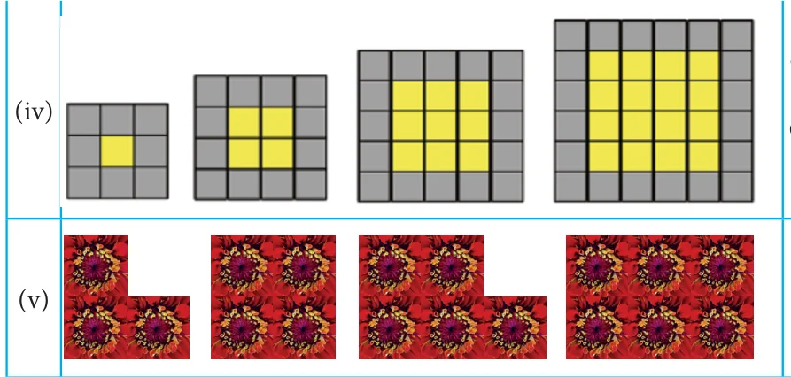
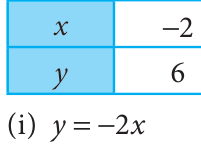

Try these
- 1.In the given figure, let x denote the number of steps and y denote
its area. Find the relationship between x and y by tabulation.
- 2.In the figure, let x denotes the number of steps and y denotes the number
of matchsticks used. Find the relationship between x and y by tabulation.
- 3.Observe the table given below.
\(x - 2 - 1 0 1 2 8\) ... \(y - 4 - 2 0 2 4\) ? ... Find the relationship between x and y. What will be the value of y, when \(x = 8\).
- 1.Match the given patterns of shapes with the appropriate number pattern and its
generalization.
- a)Sequence :


- d)Sequence :
\(y = 2n\)
- e)Sequence :
\(y = 4n\)
Objective type questions
- 2.Identify the correct relationship between x and y from the given table.
1 2 3 4 ... 4 8 12 16 ...
\(\frac{y}{(i) y= 4x}\) (ii) \(y = x + 4\) (iii) \(y = 4\) (iv) \(y = 4 \times 4\)
- 3.Identify the correct relationship between x and y from the given table.

\(- - 1 0 1 2\) ... \(3 0 - 3 - 6\) ...
\(\frac{y}{(i) y= - 2}\) (ii) \(y = +2x\) (iii) \(y = +3x\) (iv) \(y = - 3x\)